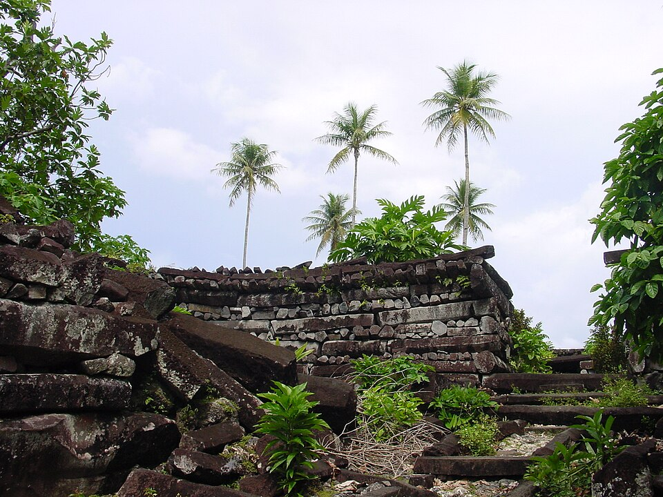

Pacific complexes and island networks
This collection compares monuments across a vast ocean without treating them as one culture. Pohnpei, Tonga, Rapa Nui, and Hawaiʻi have distinct languages, political histories, ceremonial traditions, and relationships with their ancestral places.
Pacific complexes and island networks: places and terrain
Places on this map · 1
- 1. Nan Madol, public property reference
Location notes and evidence
Public World Heritage property reference, approximately 1 km site context; not an individual islet, wall or coral sample.
Nan Madol: building, water and chiefly life ↗
Monuments in different island worlds
At Nan Madol, residences and ceremonial and mortuary places formed part of Pohnpei’s chiefly history. Architecture and oral traditions contribute different kinds of knowledge about that past. The island’s continuing institutions and living Pohnpeian language keep the monumental complex within a human history that extends well beyond the construction of its walls.
Evidence: whc.unesco.org [1] ↗ · lingweb.eva.mpg.de [2] ↗
Tonga’s Heketā and Lapaha belong to a different political and ceremonial world. Royal tombs connect spiritual authority with Tuʻi Tonga power and ongoing burial traditions. Comparing these places with Nan Madol brings varied island histories into focus. Similar stone construction does not make them parts of one Pacific state or turn genealogical traditions into identical archaeological clocks.
Evidence: whc.unesco.org [1] ↗ · educationcounts.govt.nz [2] ↗


Basalt masonry at Nan Madol brings the labor of building into view. The wider settlement included artificial islets, waterways, residences and ceremonial places; this detail represents only part of that landscape.
Nan Madol ruins in Pohnpei — CT Snow. Image source · CC BY 2.0. Wikimedia-generated 960-pixel preview; no local cropping or retouching. This image is not subject to the atlas’s noncommercial license.
Nan Madol and Pohnpei
Nan Madol combined chiefly residences, ceremonial places, and mortuary structures within Pohnpei's political history. UNESCO relates it to the Saudeleur era and continuing Nahnmwarki institutions, rather than a vanished people. Pohnpeian is a living language associated with the island; this contemporary linguistic connection is not a decoded record of every ancient resident's speech. Architecture and oral traditions provide complementary kinds of historical evidence. Source 1 ↗ Source 2 ↗
| Site / structure | Dates and methods | Organization / architecture | Limits and sources |
|---|---|---|---|
| Nan Madol, Pohnpei | UNESCO broadly dates the surviving stone palaces, temples, tombs, and residential domains to about 1200–1500 CE. | More than one hundred constructed islets, basalt walls, coral fill, and waterways form a monumental complex off southeastern Pohnpei. | Islet counts are not house or population totals. Separate individual construction dates from the broad Saudeleur-era range; customary ownership and spiritual significance continue. |
Tonga: capitals, tombs, and continuing chiefly histories
Heketā and Lapaha belong to the history of Tuʻi Tonga authority. Tonga's national submission associates royal tombs and ongoing burial traditions with both spiritual and political power. Tongan is a distinct living language; neither its relationship to other Polynesian languages nor similar stonework makes these monuments part of a single Pacific state. Genealogical traditions, recorded histories, and archaeological dates should be identified separately. Source 1 ↗ Source 2 ↗
| Site / structure | Dates and methods | Organization / architecture | Limits and sources |
|---|---|---|---|
| Heketā and Lapaha, Tongatapu | The trilithon is traditionally attributed to Tuʻitātui around 1200; royal tomb development at Lapaha has a longer, varied history. | Haʻamonga ʻa Maui uses two upright coral-limestone slabs and a lintel. Lapaha's langi are stepped earthen funerary platforms faced with stone. | These places are on Tonga's UNESCO Tentative List. The submission explicitly questions the origins of later sundial claims; oral attributions are not precise laboratory dates. |
Rapa Nui: ancestors, platforms, and later ceremonial changes
Moai represented ancestors within Rapa Nui's own ceremonial landscape. Ahu platforms, quarries, rock art, houses, and the later Orongo ceremonial village record varied activities and changing practices. Rapa Nui is also a living Polynesian language supported by contemporary revitalization programmes. Political and ritual transformation and the severe effects of colonial intrusion should remain distinct from unsupported claims that monument building ended in one simple ecological collapse. Source 1 ↗ Source 2 ↗
| Site / structure | Dates and methods | Organization / architecture | Limits and sources |
|---|---|---|---|
| Rapa Nui: Rano Raraku, ahu, and Orongo | Monumental and ceremonial traditions changed over centuries; the UNESCO synthesis places major works broadly within the eleventh–seventeenth centuries. | Rano Raraku preserves carving stages; ahu carried ancestral statues, including the fifteen-moai ensemble at Ahu Tongariki. Orongo has a different ceremonial and architectural character. | The broad span is not a secure first-settlement date. Standing displays and re-erected statues require separate conservation histories; no island-wide resident count is inferred. |
Hawaiʻi: a historically dated temple and political unification
Puʻukoholā links a particular Hawaiian heiau with Kamehameha's rise, prophecy, and worship associated with Kū. NPS places it within a hierarchical chiefly society and the kapu system, which was overturned in 1819. ʻŌlelo Hawaiʻi is the Indigenous Hawaiian language and remains central to cultural continuity. These events have their own historical chronology, distinct from the earlier monuments of Pohnpei, Tonga, or Rapa Nui. Source 1 ↗ Source 2 ↗
| Site / structure | Dates and methods | Organization / architecture | Limits and sources |
|---|---|---|---|
| Puʻukoholā Heiau, Kawaihae, Hawaiʻi Island | Built under Kamehameha in 1790–1791, a specifically documented late-eighteenth-century project. | A substantial dry-stone temple platform occupies a coastal hill. Its construction and dedication formed part of Kamehameha's struggle for power. | The heiau's completion is distinct from the later unification of the Hawaiian Islands. It is a continuing culturally significant place, not a generic example of all Polynesian religion. |
Places, finds and events on the map
The linked scholarly sources provide background. Site-level findings are mapped only with qualified dates and locations; this page does not invent settlement dots.
Further reading
Follow the history outward through these accounts. Encyclopedia links offer orientation; the studies and institutional sources provide the evidence behind this guide.
- Wikipedia — Nan Madol ↗ English
- UNESCO — Nan Madol: Ceremonial Centre of Eastern Micronesia ↗
- Max Planck Institute linguistic collection — Pohnpeian / Ponapean; language and locality ↗
- Tonga National Commission for UNESCO — The Ancient Capitals of the Kingdom of Tonga; Tentative List submission ↗
Linked writing and images remain with their rights holders. Linking does not grant permission to copy. Sources, attributions & licenses lists the atlas’s sources and separately licensed material.
Research source
Research source and access status ↗
The original third-party research response is retained privately. This public guide presents independently written, source-linked material; raw research responses are not redistributed.
Page sources
- UNESCO — Nan Madol: Ceremonial Centre of Eastern Micronesia ↗
- Max Planck Institute linguistic collection — Pohnpeian / Ponapean; language and locality ↗
- Tonga National Commission for UNESCO — The Ancient Capitals of the Kingdom of Tonga; Tentative List submission ↗
- New Zealand Ministry of Education — Language codes, including Tongan ↗
- UNESCO — Rapa Nui National Park; architectural inventory used cautiously ↗
- Chile heritage authority — Lengua rapa nui ↗
- NPS — Puʻukoholā Heiau: History and Culture ↗
- NPS — ʻŌlelo Hawaiʻi: Hawaiian Language ↗
- NPS — Puʻukoholā Heiau ↗
The editorial summaries above use linked scholarly and institutional sources. Research leads do not replace the atlas’s individually reviewed evidence records.